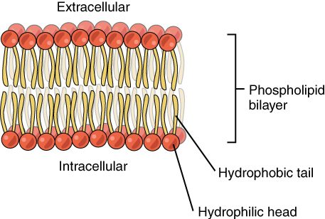

A cell is a bag of one fluid sitting in another
Picture a single red blood cell drifting through a capillary in your finger. Inside it, the fluid is rich in potassium. Just outside, the fluid is rich in sodium. The two fluids sit about a hundred-millionth of a meter apart, and they stay different for the whole four-month life of the cell. What keeps them apart is the plasma membrane. This page explains plasma membrane structure, the fluid mosaic model that describes it, and why the fluid on each side of it is so different.
Every cell in your body has the same basic plan, so start there.
The three main parts of a cell
Almost every cell you will study has three main parts (Figure 1):
- The plasma membrane (plasma = something formed or molded): the thin outer boundary of the cell. It is also called the cell membrane. This course uses "plasma membrane".
- The cytoplasm (cyto- = cell, -plasm = formed material): everything inside the plasma membrane except the nucleus. It is a watery fluid packed with dissolved ions, nutrients and proteins, plus many small internal structures. The next topic, on the cell's internal structures, takes those apart one by one.
- The nucleus (Latin nucleus = kernel): a large, rounded compartment that stores the cell's genetic instructions. The nucleus gets its own topic later in this chapter.
There are exceptions. A mature red blood cell pushes out its nucleus as it develops, so it has only a membrane and cytoplasm. That is one reason it cannot repair itself and is replaced after about 120 days.
Fluid inside, fluid outside
About two-thirds of the water in your body is inside your cells. The rest is outside them. The plasma membrane is the line between the two, so each fluid gets a name:
- Intracellular fluid (ICF) (intra- = within): the fluid inside cells. Its watery part is the fluid of the cytoplasm.
- Extracellular fluid (ECF) (extra- = outside): all the fluid outside cells.
The extracellular fluid has two main parts:
- Interstitial fluid (inter- = between, -stitial = standing): the thin layer of fluid that bathes your cells, filling the tiny spaces between them. Most of the ECF is interstitial fluid.
- Plasma: the fluid part of blood. Plasma is mostly water, with dissolved salts, nutrients, wastes and proteins. It is the ECF that travels. Blood vessels carry it around the body, and the thin walls of capillaries let water and small solutes move between plasma and interstitial fluid.
Here is the path that matters: a nutrient in your plasma leaves a capillary into the interstitial fluid, then crosses a plasma membrane into the intracellular fluid. Every substance your cells use makes that trip, and every waste makes it in reverse.
What floats in plasma: the blood cells
Plasma carries three kinds of cells and cell pieces. Together they are called the formed elements of blood. You need a short version now, because red blood cells are the classic example of how cells respond to the fluid around them. The blood chapter gives the full treatment.
- Red blood cells (RBCs): small, flexible discs, thinner in the middle than at the rim. They carry oxygen from your lungs to your tissues. Mature ones have no nucleus. They are by far the most numerous blood cells.
- White blood cells (WBCs): larger cells that defend you against infection. They are far fewer than red cells, and many of them leave the blood and patrol the interstitial fluid.
- Platelets: small fragments broken off a large parent cell. They gather at a break in a blood vessel and help seal it.
Plasma membrane structure: the phospholipid bilayer
Start with a molecule you already know. A phospholipid is amphipathic: it has a polar, hydrophilic "head" (the phosphate end) and two nonpolar, hydrophobic fatty acid "tails". Now drop millions of them into water. The tails avoid water and the heads attract it, so the molecules settle into the one arrangement that hides every tail: two sheets, tail to tail (Figure 2).
That arrangement is the phospholipid bilayer (bi- = two; also called the lipid bilayer). The heads of the outer sheet face the extracellular fluid. The heads of the inner sheet face the cytoplasm. The tails form an oily core in the middle, about 3 to 4 nanometers thick.
No enzyme builds this shape and no energy holds it together. The bilayer forms because it is the lowest-energy arrangement for amphipathic molecules in water. That has a useful consequence: a small tear in the membrane tends to reseal on its own, because exposed tails are unstable in water.

What the oily core lets through
The hydrophobic core decides what can cross the bilayer on its own. Think about what dissolves in oil and what does not.
- Crosses easily: small nonpolar molecules. Oxygen, carbon dioxide and lipid-like molecules such as steroids dissolve in the core and slip through.
- Crosses slowly: small polar molecules without a charge. Water gets across the bare bilayer, but slowly.
- Almost blocked: ions, whatever their size, and large polar molecules such as glucose. A charged ion is surrounded by a shell of attracted water molecules. Pulling it into an oily core costs so much energy that it almost never happens.
So the bilayer alone is a barrier to exactly the things cells trade in most: ions, glucose and amino acids. Those cross only where the membrane provides a protein path.
Membrane proteins: the working parts
If the bilayer is the wall, membrane proteins are the doors, locks, doorbells and bolts in it. By mass, a typical plasma membrane is roughly half protein. There are two kinds, sorted by how they attach:
- Integral proteins (integer = whole, untouched): proteins embedded in the bilayer. Most span it completely, with hydrophobic amino acids in the oily core and hydrophilic ones sticking out into the water on each side. You cannot remove them without breaking the membrane apart.
- Peripheral proteins (peri- = around, -pher = carry): proteins attached loosely to one surface, usually the inner one, often by clinging to an integral protein. They do not enter the core.
Membrane proteins do many jobs. Every item in this list is a protein doing something the bilayer cannot:
- Transport: a transport protein gives a specific ion or molecule a way across. Some form water-filled tunnels; others bind a substance and change shape to move it to the other side. Later topics in this chapter cover how they work.
- Enzymes: some membrane proteins speed up reactions right at the cell surface.
- Binding signals: some bind a specific molecule arriving from outside, such as a hormone, and change shape, which triggers a change inside the cell. The message crosses even though the molecule does not.
- Attachment: some link the membrane to the protein framework inside the cell, or to neighboring cells, holding tissues together.
- Identity: some carry sugar chains that mark the cell's identity (next section).
Look at Figure 3 with that list in mind. Every protein you see there is doing one of those jobs.

Cholesterol in the bilayer
Cholesterol molecules sit wedged between the phospholipids. Their stiff ring structure has two effects. At body temperature, cholesterol restrains the movement of the fatty acid tails, so the membrane is less fluid and less leaky. At low temperature, it keeps the tails from packing tightly into a stiff, gel-like sheet. The net result is a membrane that stays about equally fluid across a range of temperatures.
The glycocalyx: a sugar coat
Many proteins and some lipids on the outer surface carry short chains of sugars. A protein with sugars attached is a glycoprotein (glyco- = sugar). Together, all these sugar chains form the glycocalyx (glyco- = sugar, calyx = husk or cup), a fuzzy sugar coat on the outside of the cell. The sugars are always on the outer face, never on the cytoplasm side.
The glycocalyx does three main things:
- Cell identity markers. The exact pattern of sugars differs between cell types and between people. Your white blood cells read these patterns to tell your own cells from foreign ones. Sugar patterns on red blood cells are also why some people cannot safely receive blood from others; the blood chapter explains how.
- Protection and slipperiness. The sugars attract water, so the coat forms a slick, hydrated cushion. This helps blood cells slide past vessel walls without sticking.
- Recognition and attachment. Cells use each other's sugar coats to recognize and bind to the right neighbors.
The fluid mosaic model
Put the pieces together and you get the model biologists use to describe plasma membrane structure: the fluid mosaic model.
- Fluid: the phospholipids are not locked in place. Each one drifts sideways within its own sheet, trading places with its neighbors millions of times a second. Many proteins drift too. The bilayer behaves more like a thin film of oil than a solid sheet. A phospholipid rarely flips from one sheet to the other, though, because that would drag its polar head through the oily core.
- Mosaic: the membrane is a patchwork of many different pieces: phospholipids, cholesterol, many kinds of protein and the sugar chains on top.
The two sheets are not identical. The outer sheet carries all the sugar chains and a somewhat different mix of phospholipids from the inner sheet. The membrane has a clear inside and outside.
Selective permeability
You met the semipermeable membrane in the diffusion topic: a barrier that lets some substances through and blocks others. A plasma membrane is a living version of that idea, and it goes one step further. The term is selective permeability (per- = through, meare = to pass): the plasma membrane lets some substances cross freely, lets others cross only through specific proteins, and keeps others out.
Two features make it selective:
- The bilayer screens by solubility in oil. Small nonpolar molecules pass; ions and large polar molecules do not.
- The membrane proteins screen by identity. Each transport protein handles one substance or a small family of them.
Because a cell can add or remove transport proteins, it can change what crosses its membrane. A plastic sheet with holes punched in it cannot do that.
Ion differences across the membrane
Selective permeability has a striking result: the ICF and ECF have very different ion contents (Figure 4).
| Ion or solute | Extracellular fluid (outside) | Intracellular fluid (inside) |
|---|---|---|
| Sodium (Na+) | High: about 145 mmol/L | Low: about 10 to 15 mmol/L |
| Potassium (K+) | Low: about 4 to 5 mmol/L | High: about 140 mmol/L |
| Chloride (Cl−) | High: about 100 to 110 mmol/L | Low: about 5 to 15 mmol/L |
| Calcium (Ca2+, free) | About 1.2 mmol/L | About 0.0001 mmol/L, roughly 10,000 times lower |
| Negatively charged proteins and phosphates | Low | High |
The two facts to carry forward: high sodium outside, high potassium inside. Remember them as "the cell is a potassium bag in a salty sea."
Two things keep these differences in place. First, the bilayer blocks ions, so they cannot simply even out. Second, membrane proteins spend energy moving sodium out and potassium in, all the time. Later in this chapter, you meet the protein that does it. Because each of these ions carries a charge, each difference is an electrochemical gradient: a stored push that the cell can release later. Electrical signaling in your brain, muscle contraction and your heartbeat all run on it.
Worked example: a burst red blood cell.
Step 1. A red blood cell's cytoplasm has about 100 mmol/L of potassium. The plasma around it has about 4, so the inside is about 25 times more concentrated.
Step 2. If the cell's membrane tears open, nothing separates the two fluids any more.
Step 3. Potassium moves down its concentration gradient, from the cell into the plasma.
Step 4. There are billions of red cells in a single blood sample. If many burst, the plasma potassium measured by the lab rises, even though the potassium in the patient's own bloodstream is normal.
Conclusion: a tube of blood with many burst red cells gives a falsely high potassium result. Labs call such a sample hemolyzed (hemo- = blood, -lysis = breaking apart) and ask for a new draw.
Putting it together
The plasma membrane is a phospholipid bilayer with proteins set into it and sugars on its outer face. The bilayer blocks ions and large polar molecules. Proteins provide specific ways across, bind signals, anchor the cell and carry identity markers. The result is selective permeability, and selective permeability is what lets the fluid inside your cells stay so different from the fluid outside them.